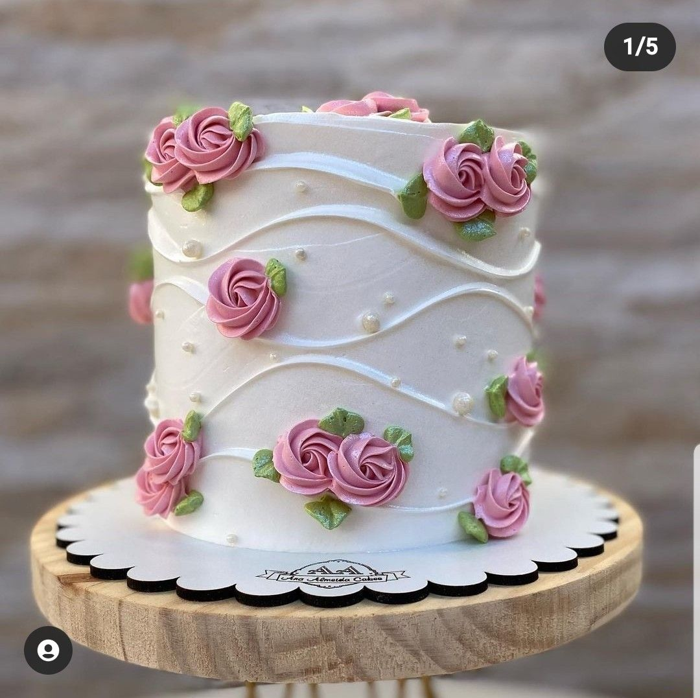
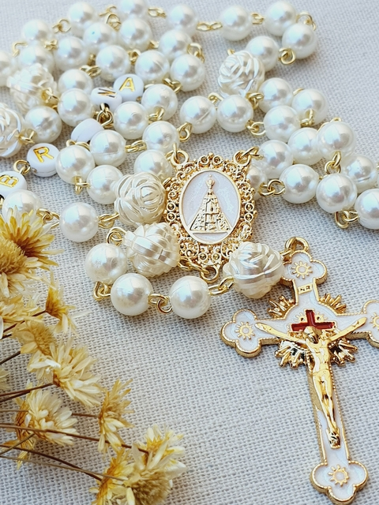

Meus projetos

Meus projetos de confeitaria
Este projeto é uma página web que apresenta uma lista dos meus bolos favoritos, incluindo informações sobre as receitas, datas de publicação e fotos para inspiração.
Projeto sobre filmes
Este projeto é uma coletânea de filmes acompanhada de análises cinematográficas, explorando impactos sociais.

Artes de artigos religiosos
Neste projeto, criei uma experiência interativa sobre a fé, permitindo que os usuários explorem informações sobre religiosidade e espiritualidade.